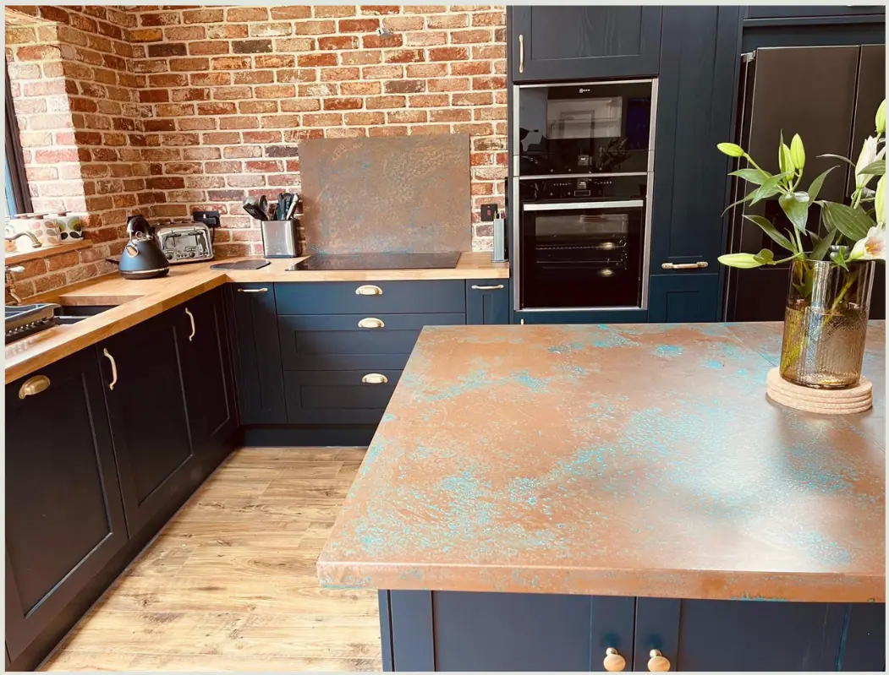
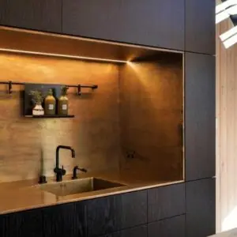
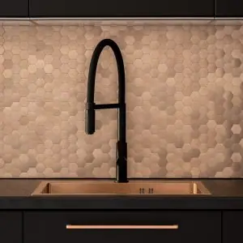

Create a Striking and Stylish Heart of the Home
When it comes to kitchen design, a black and copper kitchen offers a sophisticated and stunning aesthetic. If you’re searching for design inspiration, whether you’re planning a complete kitchen overhaul or looking to refresh the heart of your home, the black and copper combination is an excellent choice. This contemporary style is gaining momentum, offering a perfect blend of modern and traditional elements.
Why is this trend worth exploring? A black and copper kitchen brings together the depth of dark, bold tones with the warm, natural beauty of copper for an elegant statement. The classy contrast between black and copper creates a striking visual impact, balancing both dimensions of boldness and subtlety. While black offers a sleek and modern look, copper introduces warmth and richness, ensuring that the kitchen remains welcoming and stylish.
One of the many reasons copper is becoming a staple in kitchens is its unique character. Copper adds charm and individuality to a space, but it’s also incredibly practical. The metal is naturally antimicrobial, making it an ideal surface for food preparation areas. Its durability ensures that it will stand the test of time, both in terms of aesthetics and function.
Whether you’re working with gloss, satin, or matte black finishes, they all complement the warm, rosy hue of copper, allowing for versatile design options. Below, we share some of our favourite copper and black kitchen ideas to inspire your next kitchen project…
Black and Copper Kitchen Ideas
1. Black Kitchen with Copper Worktops
One of the most striking design combinations is a black kitchen with copper worktops . For a sleek and cohesive look, black kitchen cabinets paired with copper worktops provide a beautiful contrast that is both modern and functional.
Black countertops can create a seamless, uninterrupted line, emphasising the sleekness of the design, but copper worktops offer something truly unique. The rich metallic tone of copper brightens the space and adds warmth, while also being naturally antimicrobial—perfect for a busy kitchen where hygiene is a priority.
Alternatively, you could opt for a stone kitchen countertop, like slate, quartz or granite, for a more rustic or industrial look. However, for a truly modern black and copper kitchen, we recommend opting for natural or aged copper worktops . Their practical and visual appeal makes them the ideal choice for anyone looking to elevate their kitchen space!

2. Copper Splashbacks
For a modern black and copper kitchen design, splashbacks provide a stunning opportunity to make a statement. For example, a copper splashback can transform a black kitchen by adding texture, depth, and an eye-catching focal point. Whether you prefer a polished, natural copper finish or an aged copper splashback with flecks of verdigris, the result is undeniably beautiful.
Aged copper splashbacks introduce subtle pops of colour with turquoise accents from the patina, creating a dynamic contrast against black cabinets. This feature allows the kitchen to feel both timeless and contemporary, perfect for those who want to create a truly unique space.

3. Black and Copper Kitchen Sink
Another exciting way to incorporate copper into your kitchen is with a copper kitchen sink. A copper sink can be a show-stopping addition to your kitchen island or worktop. It not only serves as a functional element but also adds a touch of luxury to the space. Pair a copper sink with black cabinets or worktops for a design that feels cohesive and balanced. The warm copper tones will break up the darker colours and draw attention to the sink area, making it both practical and visually appealing.

4. Kitchen with Black and Copper Cabinets
For a bold and distinctive look, consider incorporating copper cabinets into your black kitchen design scheme. Copper cupboard doors can be used to make a statement, whether you opt for full copper cabinetry or a mix of black and copper. The warm hue of copper adds a soft, inviting touch to the darker black tones, creating a balanced design.
Alternatively, using a combination of black and copper cabinet doors allows you to play with contrasts, drawing the eye to key areas of the kitchen. Copper cupboards also work wonderfully as accent pieces, making your kitchen both practical and beautiful.
5. Black Kitchen with Copper Cooker Hood
A copper cooker hood is another stunning way to brighten up a dark kitchen. Positioned above your hob, the metallic copper hood becomes a central design feature that adds an element of luxury to the kitchen. In a black kitchen, a copper cooker hood will stand out beautifully, creating a bold focal point while also enhancing the overall design.

6. Copper and Black Kitchen Plinths
Kitchen plinths are often overlooked, but they play a crucial role in tying the whole design together. For a seamless transition from cabinets to floor, opt for black kitchen plinths with black cabinetry, creating a cohesive and uninterrupted look. However, if you’re looking to add a subtle statement and brighten up those lower, often neglected areas, consider copper kitchen plinths . The warm metallic tones of copper can introduce a touch of luxury and interest to the space without overpowering the design, subtly drawing attention to the fine details.
For an even more dramatic effect, consider adding strip lighting beneath the cabinets. The light reflecting off the copper plinths will create a stunning glow, turning an often unnoticed area into a design highlight.

7. Black and Copper Decorations for a Modern Kitchen
Smaller decorative elements are a great way to tie your black and copper kitchen together. Consider adding:
- Copper wall art to bring an artistic touch to the space.
- Black and copper kitchen appliances, such as kettles, toasters, or tea/coffee storage jars, to add functional elegance.
- Copper kitchen hardware like taps, drawer handles, or even wall sockets to bring consistent, subtle accents.
- Copper kitchen utensils to add a practical yet stylish twist. Don’t forget mugs and bowls, too.
- Black or copper shelves, especially floating shelves on empty wall spaces, can enhance both function and form in your kitchen.
These accents work to harmonise the design, ensuring that the copper elements complement rather than overwhelm the black kitchen features.

8. Modern Black Kitchen with Copper Tiles
For those looking to make a bigger statement for their decoration, consider copper tiles . Whether used for a feature wall or as a backdrop in open shelving units, copper tiles can bring a glamorous and modern touch to your black kitchen – or any room, for that matter! Pairing copper tiles with black cabinets creates a visually stunning contrast that feels both modern and warm.
FAQs
What colour goes with a copper kitchen?
Copper pairs beautifully with black, navy, white, and dark green. Its warm hue makes it a versatile option for many kitchen colour schemes.
Do copper and black go together?
Yes, copper and black are a perfect match, offering a striking contrast that creates a sleek, modern, and stylish look for any kitchen.
Is copper in style for a kitchen?
Absolutely! Copper is a natural, timeless material that adds elegance, character, and warmth to any kitchen design. It’s currently experiencing a resurgence in modern kitchen styles.
Is it a good idea to have a black kitchen?
Yes, black kitchens are sleek, stylish, and perfect for modern homes. Pairing black with copper elements adds warmth and personality, preventing the space from feeling too stark. However, consider the amount of natural light in your kitchen and the size of the space, as too much black can make a room appear smaller and darker.
What kind of black and copper kitchen design should I go for?
When designing a black and copper kitchen, there are several styles to consider such as modern, industrial, Scandinavian, traditional, or transitional.
The design you choose should depend on your personal style, but no matter which style you opt for, always consider colour balance to create harmony. Too much black can make the space feel dark and oppressive, while too much copper can be overwhelming. Aim for a 60-40 or 70-30 ratio of black to copper, and play with textures and finishes to add depth and interest. For example, pair glossy black cabinets with matte copper accents, or use a hammered copper sink with a smooth black countertop.
What lighting works well for a black and copper kitchen?
Warm, ambient lighting works best in a black and copper kitchen. Consider pendant lights with copper detailing to tie the scheme together while creating a cosy atmosphere.
Products


If you can dream it, we’ll make it.
Bars, balustrades, staircases, worktops, cladding and pieces that don’t have a name yet. Our designers and craftspeople work in brass, copper, zinc and steel, and alongside wood.